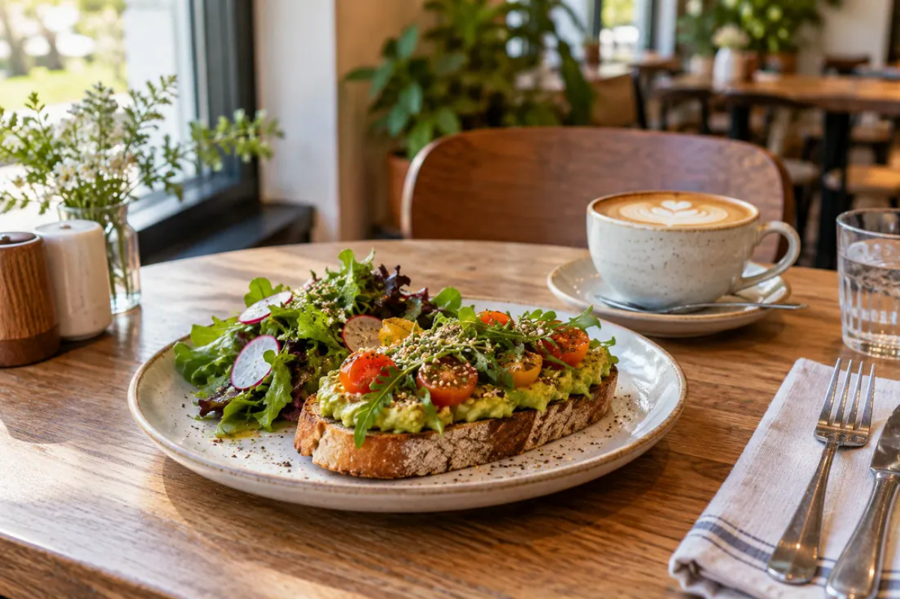

01✳
LUNCH · HOUSE FAVORITESmoky chicken bowlCharred chicken, greens, warm grains, lemon herb sauce.
$14
A clear menu should help a guest decide and give the team an order that is easy to review. Ember makes that small journey tangible.
Fictional café · example items and pricing · checkout is not connected

Menu browsing and order review are simple interactions that can make a busy café easier to navigate on a phone or at a table.
Category filters keep the menu useful without hiding what the café serves.
Guests can change quantities and review a clear sample subtotal before continuing.
A real ordering flow would verify menu availability, pickup time, payment, and kitchen capacity.
A production system would connect live menu availability, order acceptance, pickup windows, secure payment, and staff notifications.